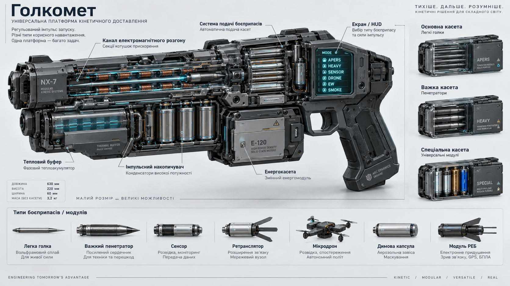

01
Легка голка
Основний протипіхотний боєприпас. Дуже мала маса дозволяє розміщувати в основній касеті близько тисячі голок.
Призначена для ураження живої сили та використання проти слабших зон захисту.

Голкомет — компактна універсальна зброя Нульового плану, створена на основі високоефективного електромагнітного прискорювача. Його головна особливість полягає не лише у високій швидкості кінетичного боєприпасу, а в можливості програмувати профіль розгону відповідно до конкретного корисного навантаження.
Одна платформа може працювати з легкими протипіхотними голками, важкими кінетичними пенетраторами, сенсорами, ретрансляторами, димовими капсулами, модулями радіоелектронної боротьби, маяками та транспортними капсулами з мікродронами.

Усередині голкомета знаходиться імпульсний накопичувач. Енергоблок поступово заряджає його, після чого накопичувач віддає енергію прискорювальній системі за дуже короткий проміжок часу.
Електроніка зброї визначає тип встановленого навантаження та відповідно до його конструкції формує необхідний профіль прискорення. Тому легка голка, важкий пенетратор і мікродрон запускаються за принципово різними режимами.
Для універсальної системи особливо важливо не просто визначити максимальну швидкість, а забезпечити таке прискорення, яке конкретне навантаження здатне витримати.
Основний протипіхотний боєприпас. Дуже мала маса дозволяє розміщувати в основній касеті близько тисячі голок.
Призначена для ураження живої сили та використання проти слабших зон захисту.
Довгий кінетичний стрижень із високою масою та значно більшою енергією пострілу.
Використовується проти важких бронекостюмів, легкої бронетехніки, броньованих машин та їхніх уразливих конструктивних вузлів.
Універсальна касета для допоміжних завдань.
Сенсори, ретранслятори, маяки, димові та аерозольні капсули, модулі РЕБ, приманки та транспортні капсули з мікродронами.
Легка голка є основним боєприпасом голкомета. Її головна перевага — поєднання малої маси, високої швидкості та великого боєкомплекту.
Бронепробивність голки не пояснюється лише її малою площею контакту. Ефективність визначається сукупністю параметрів: масою, швидкістю, довжиною, щільністю, міцністю матеріалу та геометрією самого пенетратора.
Протипіхотний боєприпас спеціально відрізняється від протиброньового. Після проходження захисту він повинен ефективно передати енергію цілі, а не просто пройти крізь неї.
Важкий боєприпас — це вже не тонка голка, а довгий кінетичний стрижень, спеціально створений для роботи по броні.
Його конструкція не передбачає вибухового заряду. Основна маса боєприпасу працює як пенетратор, який передає цілі кінетичну енергію під час зіткнення.
Ручний голкомет не є універсальним засобом боротьби з будь-якою бронетехнікою. Важкий режим ефективний проти важких бронекостюмів, легкої техніки, стиків, рухомих вузлів та інших слабших ділянок захисту. Лобова броня основного танка потребує зброї іншого масштабу.
Компактний оптичний, тепловий або акустичний модуль, який можна доставити на дах, за огорожу, у коридор або на інший бік вулиці.
Малий вузол зв'язку, який автоматично підключається до тактичної мережі. Використовується для створення додаткової точки зв'язку за масивними перешкодами.
Дозволяє точно доставити джерело диму або аерозолю у вибрану точку. Голкомет забезпечує точність доставки, а не змінює властивості самого аерозолю.
Компактний постановник перешкод, який можна винести вперед або встановити збоку від групи. Використовується для локального впливу на дрони та канали зв'язку.
Створює додаткову точку прив'язки для тактичної мережі, навігації, маркування цілі або координації підрозділу.
Мікродрон запускається всередині транспортної капсули. Голкомет використовує для нього м'який профіль прискорення, після чого капсула розкривається, а дрон переходить на власний керований політ.
Різні боєприпаси мають різну геометрію, тому голкомет використовує модульну систему подачі.
| Касета | Вміст | Призначення |
|---|---|---|
| Основна | До приблизно 1000 легких голок | Протипіхотний бій |
| Важка | Кінетичні пенетратори | Броня та техніка |
| Спеціальна | Сенсори, дрони, РЕБ, маяки, димові модулі | Розвідка та тактичні завдання |
Автоматика голкомета сама вибирає відповідний канал подачі відповідно до обраного типу навантаження.
Голкомету не потрібен окремий реактор. Основний запас енергії надходить від змінної енергокасети або енергосистеми силового бронекостюма.
Усередині зброї працює імпульсний накопичувач. Він заряджається поступово, а потім за частки мілісекунди віддає накопичену енергію електромагнітному прискорювачу.
Саме тому короткочасна потужність системи може бути значно вищою за потужність, яку безпосередньо видає основне джерело енергії.
Головним обмеженням голкомета є не кількість боєприпасів, а тепло, яке виникає під час роботи електромагнітного прискорювача.
Для його накопичення використовується фазовий тепловий акумулятор. Він дозволяє тимчасово приймати значну кількість тепла без різкого перегріву робочих компонентів.
Після інтенсивної стрільби автоматика може знизити темп або заблокувати важкий режим, навіть якщо в касеті ще залишилися боєприпаси, а енергоблок не розряджений.
Перегрітий голкомет не стає марним. Він може втратити можливість робити важкі постріли, але продовжувати працювати легкими голками та низькоенергетичними спеціальними модулями.
Голкомет може мати один або кілька змінних термокартриджів, які дозволяють тимчасово перевищити нормальний бойовий цикл.
Після використання картридж потребує заміни або тривалого охолодження. Агресивніші системи скидання тепла можуть створювати тепловий слід, пару або іншу помітну сигнатуру, тому їхнє використання залежить від тактичної ситуації.
Електромагнітний принцип не скасовує закон збереження імпульсу. Легка голка створює невелику віддачу, тоді як важкий пенетратор передає зброї значно більший імпульс.
Саме тому важкий режим особливо ефективний у поєднанні із силовим бронекостюмом. Система костюма може передавати навантаження від зброї через руку, плече, корпус, таз та ноги, створюючи замкнений силовий контур.
Перед потужним пострілом система може перевірити положення тіла та наявність достатньої опори. Якщо умов для безпечного запуску немає, максимальний режим блокується.
Голкомет не є абсолютно безшумним.
У ньому немає вибуху порохового заряду, дульного полум'я та потоку гарячих порохових газів, тому його сигнатура значно нижча за традиційну вогнепальну зброю.
Водночас високошвидкісна голка може створювати ударну хвилю під час польоту. Тому для бойових режимів правильніше говорити про малосигнатурну стрільбу, а не про абсолютну тишу.
Для сенсорів, мікродронів та інших допоміжних модулів можливий низькошвидкісний запуск із мінімальною звуковою сигнатурою.
Універсальність голкомета змінює сам підхід до його використання. Боєць отримує не просто зброю для ураження цілі, а компактну систему доставки різних інструментів без необхідності виходити з укриття.
Сенсор або мікродрон можна доставити вперед, не виставляючи самого бійця під вогонь.
Ретранслятор дозволяє швидко створити додатковий вузол тактичної мережі там, де основний сигнал перекривається будівлями або іншими перешкодами.
Димова або аерозольна капсула може бути доставлена точно в потрібну точку, створюючи групі можливість змінити позицію або перетнути відкриту ділянку.
Модуль РЕБ можна винести вперед або встановити біля ворожої техніки, після чого він створює локальну зону перешкод.
Важкий пенетратор використовується не обов'язково для повного знищення машини. Достатньо вивести з ладу важливий вузол, привід, сенсор або іншу критичну частину.
Для характерника голкомет розкриває повний потенціал завдяки інтеграції з мислезв'язком та силовим бронекостюмом.
Мислезв'язок дозволяє отримувати інформацію від систем зброї та прицілювання безпосередньо під час бою. Бронекостюм одночасно забезпечує додаткову енергію та дозволяє працювати з потужнішими режимами.
У результаті голкомет стає частиною єдиної бойової системи: боєць, бронекостюм, мислезв'язок, сенсори та сама зброя працюють як один комплекс.
Голкомет Нульового плану — це компактний багатоступеневий електромагнітний прискорювач із програмованим профілем розгону та модульною системою боєприпасів.
Основна касета містить близько тисячі легких голок. Окрема важка касета використовується для кінетичних пенетраторів. Спеціальна касета призначена для сенсорів, мікродронів, ретрансляторів, маяків, димових капсул, модулів РЕБ та інших спеціальних навантажень.
Система автоматично визначає допустимий режим запуску для конкретного боєприпасу. Потужні режими обмежуються тепловим режимом та можливостями прийняття віддачі.
Для характерника голкомет може бути інтегрований із силовим бронекостюмом та мислезв'язком, що дозволяє використовувати його як частину єдиної бойової системи.
Таким чином, голкомет є не просто стрілецькою зброєю, а універсальною платформою кінетичного доставлення, здатною виконувати бойові, розвідувальні, комунікаційні та спеціальні тактичні завдання.